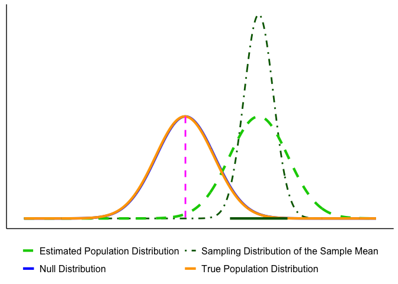
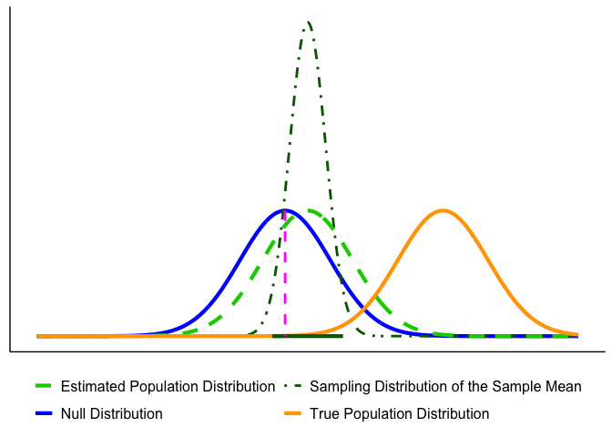
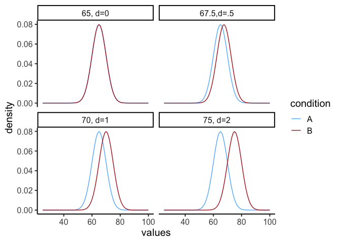
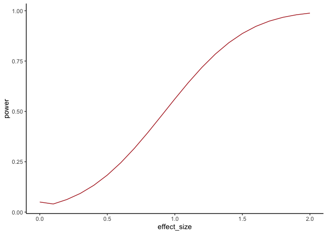
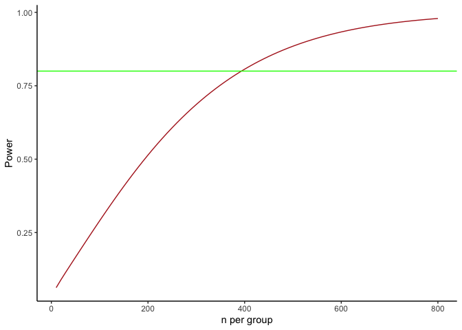
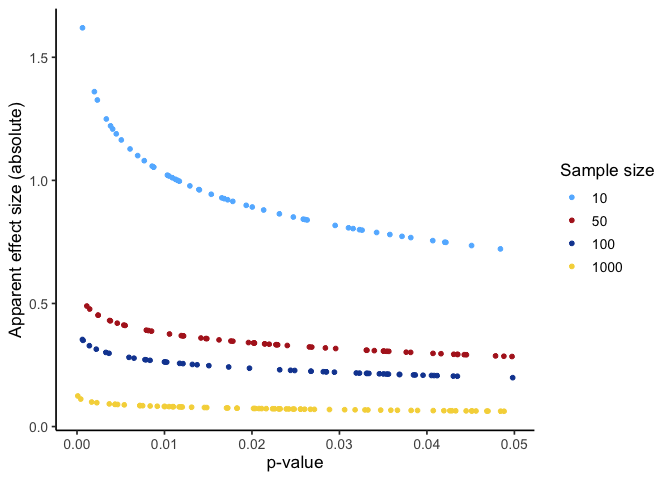

5 Errors, Power, and Effect Size
It is better to be roughly right than precisely wrong.
Attributed to John Maynard Keynes
The previous chapter built the machinery of a hypothesis test and left you with a yes or no: reject \(H_0\), or fail to reject it. That decision is only part of the story.
Two questions remain. First, how often will that decision be wrong, and in which direction? Second, when we do reject, how large is the effect we found, and was the study ever capable of detecting it in the first place? This chapter answers both.
5.1 Errors in Hypothesis Testing
Sometimes, even when we apply the test correctly, sampling variability can lead us to the wrong conclusion.
Type I Error (\(\alpha\)): Rejecting \(H_0\) when it is actually true. This is like a smoke alarm going off when there’s no fire: a false alarm. By convention, \(\alpha\) is often set at 0.05 (5%).
Type II Error (\(\beta\)): Failing to reject \(H_0\) when it is actually false. This is like a smoke alarm staying silent when there is a fire: a missed signal.
| Decision | If the null hypothesis is True | If the null hypothesis is False |
|---|---|---|
| Reject \(H_0\) | Type I error (prob = \(\alpha\)) | Correct (prob = 1 - \(\beta\)) |
| Fail to reject \(H_0\) | Correct (prob = 1 - \(\alpha\)) | Type II error (prob = \(\beta\)) |
Key Takeaway: As \(\alpha\) gets smaller, \(\beta\) gets bigger, and vice-versa.
Errors happen because samples are imperfect.
- In Figure 5.1, the true population (orange) is almost identical to the null (blue). By chance, however, the sample mean lands far away, and the CI excludes \(\mu_0\). The test rejects \(H_0\) even though it is true: a Type I error.
- In Figure 5.2, the true population mean (orange) is far from \(\mu_0\), but the particular sample looks close to the null. The CI includes \(\mu_0\), so the test fails to reject when it should reject the null: a Type II error.

5.1.1 Effect of Sample Size on Errors
With fixed \(\alpha\) and correct assumptions, the long-run Type I error rate is \(\alpha\) for any \(n\). Sample size mainly affects Type II error: with small \(n\), the sampling distribution is wide, true effects are harder to detect, and \(\beta\) increases (power decreases). As \(n\) grows, the sampling distribution tightens, \(\beta\) falls, and power rises. Apparent changes in the Type I rate at small \(n\) usually reflect assumption violations (e.g., non-normality, poor variance estimates, multiple looks), not \(n\) itself.
Takeaway: Increasing \(n\) improves estimation precision and power (reduces \(\beta\)); Type I error remains at \(\alpha\) when assumptions hold.
The one-tailed cost, made precise. Chapter 4 said that habitually running one-tailed tests makes you reject more often than your stated \(\alpha\) implies. Here is what that means: a one-tailed test at \(\alpha = .05\) puts the whole 5% in one tail, so if you pick the tail after seeing which way the data went, you have effectively run a two-tailed test at \(\alpha = .10\) and doubled your Type I error rate. The test itself is not wrong. Choosing its direction from the data is.
5.1.2 How to interpret \(p\)-values
A \(p\)-value is the probability, assuming \(H_0\) is true, of obtaining a test statistic at least as extreme as the one we observed. We reject at level \(\alpha\) when \(p<\alpha\).
Tails. Match the tail(s) to \(H_a\):
- Two-sided (\(H_a:\ \mu \neq \mu_0\)): \(p = 2\cdot P(\text{tail beyond }|z_{\text{obs}}|)\)
- One-sided (\(H_a:\ \mu > \mu_0\)): \(p = P(Z \ge z_{\text{obs}})\)
- One-sided (\(H_a:\ \mu < \mu_0\)): \(p = P(Z \le z_{\text{obs}})\)
CautionWarning: Common mistakes to avoid
- \(p\) is not the probability that \(H_0\) is true.
- A smaller \(p\) does not imply a larger effect; report effect size and a CI.
- With very large \(n\), tiny effects can yield tiny \(p\); assess practical importance.
- With small \(n\), true effects can yield large \(p\) (low power).
Takeaway. Use \(p\) for the decision, but interpret results alongside effect size and a 95% CI.
5.1.3 Reporting results
A results statement gives the plain-language conclusion and the key statistics in a fixed order. Aim for one clean sentence plus context.
Template (two-sided test): Plain-language finding. (test, statistic, df or n, value of statistic, p-value, effect size/CI if relevant).
What to include (in order):
- Test name (e.g., one-sample z, two-sample t, χ², regression).
- Test statistic and its degrees of freedom (or sample size for z).
- Exact \(p\) (report \(p<0.001\) when very small).
- An effect size and/or a 95% CI when available.
Examples
One-sample z: The average mercury level within 10 km of the smelter was higher than the legal limit (z = 2.85, n = 32, p = 0.004).
One-sample t with CI: Mean nitrate exceeded the target by 0.41 mg/L (t(31) = 2.6, p = 0.013, 95% CI [0.09, 0.73] mg/L).
Two-sample t with effect size: Downstream sites had higher turbidity than upstream sites (t(58) = 3.1, p = 0.003, Cohen’s d = 0.80).
Not significant (be explicit): Mean canopy temperature did not differ from the baseline (t(47) = 1.2, p = 0.24); we fail to reject \(H_0\).
Rounding & style
- Round statistics to 2 decimals; \(p\) to 3 decimals (use \(p<0.001\) when needed).
- Use “fail to reject \(H_0\)” (not “accept”).
- Match tail to hypothesis in prose (e.g., “higher than,” “lower than,” or “different from”).
Do / Don’t
- Do pair the sentence with a short, substantive takeaway (what it means for the question).
- Do include a CI or effect size when it aids interpretation.
- Don’t restate methods; don’t claim proof; don’t omit units.
Takeaway: One sentence is enough: state the direction in words, then report the test, the statistic, df or n, the \(p\)-value, and an effect size or CI.
5.1.4 Beyond the 0.05 cutoff: Effect-size and power
Why go beyond a yes/no at \(\alpha=0.05\)? Because scientists, managers, policymakers, and communities need to know how large an effect is and how likely a study is to detect it. That’s what effect size and power provide.
Working definitions
Effect size: how big the difference or association is (in natural units or standardized units like Cohen’s \(d\)).
Power (\(1-\beta\)): the probability your design will detect a real effect of a specified size at your chosen \(\alpha\).
Use them before you sample. Decide what effect is meaningful for your context (e.g., a 0.3 mg/L nitrate reduction) and size your study to have adequate power to detect that effect.
5.1.5 Effect size: practical vs. standardized
What is effect size? It’s how big the difference or association is. You can express it in original units (practical meaning) or in standardized units (comparability across scales).
Practical (original units). Use the scale stakeholders recognize.
- Exams: “Treatment improved scores by 5 percentage points” (a letter-grade–sized change).
- Time-on-task: “New training reduces practice time by 1,000 hours out of 10,000” (a 10% reduction).
These statements are easy to interpret, but they don’t travel well across contexts or measures.
Standardized (unitless). When units are unfamiliar or scales differ, standardize by typical variability. The most common standardized effect size metric is Cohen’s d. For two means with a common SD \(\sigma\),
\[d = \frac{\mu_1 - \mu_2}{\sigma}\]
Now “how big?” is expressed in SD units.
This is the same ratio as a test statistic, with one part swapped. Chapter 4 gave the general shape, effect over error, and the \(t\)-test filled it in as
\[t = \frac{\bar{X}-\mu_0}{s/\sqrt{n}} \qquad \text{versus} \qquad d = \frac{\mu_1-\mu_2}{\sigma}\]
Same numerator: the effect. Different denominator, and that difference is the whole point. The \(t\) statistic divides by the standard error, which shrinks as \(n\) grows, so \(t\) gets larger with more data even when the effect stays exactly the same. Cohen’s \(d\) divides by the standard deviation, which does not shrink with \(n\), so \(d\) reports the size of the effect itself.
That is why a large \(t\) does not mean a large effect, and why the two numbers answer different questions. Collect enough data and you can drive \(t\) as high as you like off a trivial difference. You cannot do that to \(d\).
Environmental example (biodiversity index). Suppose an index increases from 3 to 4 after reforestation.
In raw units: +1 index point.
In standardized terms:
- If the SD across sites is 1.0, then \(d = 1.0\): a large shift.
- If the SD is 10, then \(d = 0.10\): a small shift.
Takeaway: Report both when possible: original units for meaning (policy/action) and a standardized effect (e.g., Cohen’s \(d\)) for comparison across studies.
Notes for practice
- In real data, \(\sigma\) is unknown; estimate it (pooled SD for two groups, with small-sample corrections as needed).
- Heuristics (context matters): \(d \approx 0.2\) (small), \(d \approx 0.5\) (medium), \(d \approx 0.8\) (large).
- A “small” \(d\) can still be important (e.g., small reductions in lead or \(\mathrm{PM}_{2.5}\) can matter for health).
- Pair effect sizes with 95% CIs to show precision, not just magnitude.
Let’s ground effect size in a concrete example. Suppose we’re measuring final exam performance (percent correct). The class mean is 65% with a standard deviation of 5%. Group A is a control, while Group B receives some instructional treatment.
Figure 5.3 shows four possible scenarios:

- Panel 1 (\(d=0\)): No effect. Both groups sample from the same distribution (mean = 65).
- Panel 2 (\(d=0.5\)): Group B’s mean shifts upward by 2.5 points (67.5).
- Panel 3 (\(d=1\)): A 5-point shift (70).
- Panel 4 (\(d=2\)): A large 10-point shift (75).
The takeaway is that effect size puts raw differences into a standard-deviation scale. A half–SD shift (\(d=0.5\)) is noticeable but modest; a two–SD shift (\(d=2\)) is very large. In practice, we rarely know beforehand how big a shift to expect, that’s why we conduct the study.
5.2 Power
When a real effect exists, your design needs to be sensitive enough to detect it, otherwise the test has little value. We’ve already seen that effects can vary in size. Now we add a second idea: study designs differ in their ability to reliably detect those effects. This sensitivity is called statistical power.
Power rises when:
- Effect size is larger.
- Sample size (\(n\)) is larger (smaller \(SE\)).
- The test is less conservative (larger \(\alpha\)).
- Measurement noise is lower (smaller \(SD\)).
Question: “With \(\alpha = 0.05\), how large must \(n\) be to achieve \(\ge 80\%\) power for the smallest effect that matters?”
5.2.1 Simulation walkthrough
Let’s see how design choices affect power with a simple simulation. Suppose we have two groups, each with \(n=10\). Group A (control) is sampled from a normal distribution with mean = 10 and \(SD = 5\). Group B (treatment) has a mean = 12.5, a shift of 2.5 points (Cohen’s \(d=0.5\)), considered a medium effect.
If we simulate this experiment 1,000 times and run an independent-samples \(t\)-test each time, how often do we reject \(H_0\) at \(\alpha=0.05\)?
set.seed(2025)
p <- numeric(1000)
for(i in 1:1000){
A <- rnorm(10, 10, 5)
B <- rnorm(10, 12.5, 5)
p[i] <- t.test(A,B,var.equal=TRUE)$p.value
}#> [1] 0.207This proportion is the power of the design: the probability of detecting the true effect in repeated experiments. With \(n=10\), it’s only about 20%. Even though we know a medium-sized effect exists, the test usually fails to pick it up with such a small sample.
5.2.2 How power changes
- Larger \(n\). Doubling to \(n=20\) per group reduces sampling error and roughly doubles power:
p <- numeric(1000)
for(i in 1:1000){
A <- rnorm(20, 10, 5)
B <- rnorm(20, 12.5, 5)
p[i] <- t.test(A,B,var.equal=TRUE)$p.value
}
mean(p < 0.05)
#> [1] 0.328- Smaller \(\alpha\). Making the test more conservative (e.g., \(\alpha=0.01\)) lowers power, because fewer outcomes count as “significant”. Using the same \(n=20\) simulations, we just change the cutoff:
mean(p < 0.01)
#> [1] 0.123- Bigger effects are easier to detect. If the treatment produces a big shift (say 2 standard deviations), the same design has near-perfect power:
p <- numeric(1000)
for(i in 1:1000){
A <- rnorm(20, 10, 5)
B <- rnorm(20, 20, 5) # 2SD effect
p[i] <- t.test(A,B,var.equal=TRUE)$p.value
}#> [1] 15.2.3 Power curves
It’s best to think of power as a profile, not a single number. A power curve shows how sensitive a design is across a range of possible effects.
In Figure 5.4, we fix the design to a two-sample \(t\)-test with \(n=10\) per group and \(\alpha=0.05\). Power is plotted on the y-axis, and the true effect size (Cohen’s \(d\)) is on the x-axis.

Walkthrough.
- With \(n=10\), the design only detects a medium effect (\(d=0.5\)) about 18% of the time.
- A larger effect (\(d=0.8\)) is caught about 40% of the time.
- Very large effects (\(d=2\)) are detected almost every time (about 99%).
This shows that small samples are only sensitive to big, obvious effects.
Now suppose prior research suggests the effect size is small (\(d=0.2\)). Instead of varying the effect, we can ask: how many subjects per group do we need to have decent power?
Figure 5.5 plots power against sample size for detecting \(d=0.2\). The green line marks 80% power, a common planning target.

Walkthrough.
- At \(n=10\) per group, power to detect \(d=0.2\) is near zero.
- To reach 80% power, we need about 394 per group.
- Even then, 20% of studies would still fail to reject \(H_0\) just by chance.
Takeaway:
- A power curve shows, for a fixed design, how power rises as the true effect grows.
- A power-vs-\(n\) curve shows how many samples you need to hit a target power for a specific effect.
- Power analysis is mainly a planning tool, not a results-reporting tool. When you design a study, don’t just aim for “power = 0.8.” Always state the assumed effect size and the standard deviation you used for that calculation. Otherwise, “0.8” has no meaning: power depends entirely on those assumptions.
5.2.4 Planning your design
Our discussion of effect size and power highlights the importance of understanding the statistical limitations of an experimental design. Planning a study means working through the following, in order:
- Define a meaningful effect (environmentally or policy-relevant minimum).
- Choose \(\alpha\) (often 0.05; justify if different).
- Estimate variability (pilot data, literature, or historical monitoring).
- Compute \(n\) for \(\ge 80\%\) power (or explain tradeoffs if you can’t reach it).
- Pre-specify one- vs two-tailed before data collection.
As a general rule of thumb, small-\(n\) designs can only reliably detect very large effects, whereas large-\(n\) designs can reliably detect much smaller effects. As a researcher, it is your responsibility to plan your design accordingly so that it is capable of reliably detecting the kinds of effects it is intended to measure.
5.2.5 Two cautions (common pitfalls)
Low power inflates doubt, even when \(p<0.05\). Underpowered studies rarely replicate. A design with only 30% power to detect an expected effect might, by luck, produce a “significant” result, but most replications will not. Worse, false positives from small samples tend to look exaggerated: if a spurious finding reaches significance, the estimated effect size is often large enough to seem convincing.
Huge \(n\) finds tiny effects. With very large samples, trivial differences can register as statistically significant. For example, a billion-person trial might show a drug reduces pain by 0.01%. That effect is “real” but practically meaningless. This is why effect size and confidence intervals should be reported alongside \(p\)-values: significance alone is not enough.
Figure 5.6 shows the first pitfall graphically. Even when the null hypothesis is true, 5% of tests are expected to fall below \(\alpha = 0.05\). In small samples, those false positives tend to be paired with large apparent effect sizes. This can give the illusion of a strong, replicable finding when in reality it is just sampling noise.

Takeaway: statistical significance does not guarantee scientific significance. Always interpret \(p\) in the context of effect size, confidence intervals, and study design.
Key point
Power is not a fixed property of a test; it depends entirely on assumptions about \(n\), effect size, \(\alpha\), and variability. Think of it as a family of numbers, not a single value. That’s why power analysis is most useful before you collect data: it tells you whether your design is capable of detecting the kind of effect you care about.
5.3 Chapter Summary
Why it matters. A test result on its own is a yes or a no. This chapter is about everything that yes or no leaves out: how often the decision is wrong, how large the effect actually is, and whether the study was ever built to detect it.
Core ideas
- Two ways to be wrong. A Type I error rejects a true \(H_0\), at a rate you set with \(\alpha\). A Type II error fails to reject a false one. Tightening one loosens the other, which is why \(\alpha = .05\) is a balance rather than a fact about nature.
- What a \(p\)-value is not. It is not the probability that \(H_0\) is true, and on its own it says nothing about how large an effect is.
- Significance is not size. With a large enough \(n\), a trivially small difference clears any threshold. Report an effect size and a confidence interval next to every \(p\)-value so a reader can judge whether the result matters, not just whether it cleared a line.
- Effect size in two currencies. Original units carry practical meaning for the people who act on your result; a standardized effect like Cohen’s \(d\) makes results comparable across studies and scales. Report both when you can.
- Power is a design decision. Power depends on \(n\), effect size, \(\alpha\), and variability together. An underpowered study fails twice over: it usually misses real effects, and when it does reach significance the effect it reports tends to be inflated. That is why power analysis belongs before data collection.
Barnes, Mallory L. 2023. Statistics for Environmental Science.